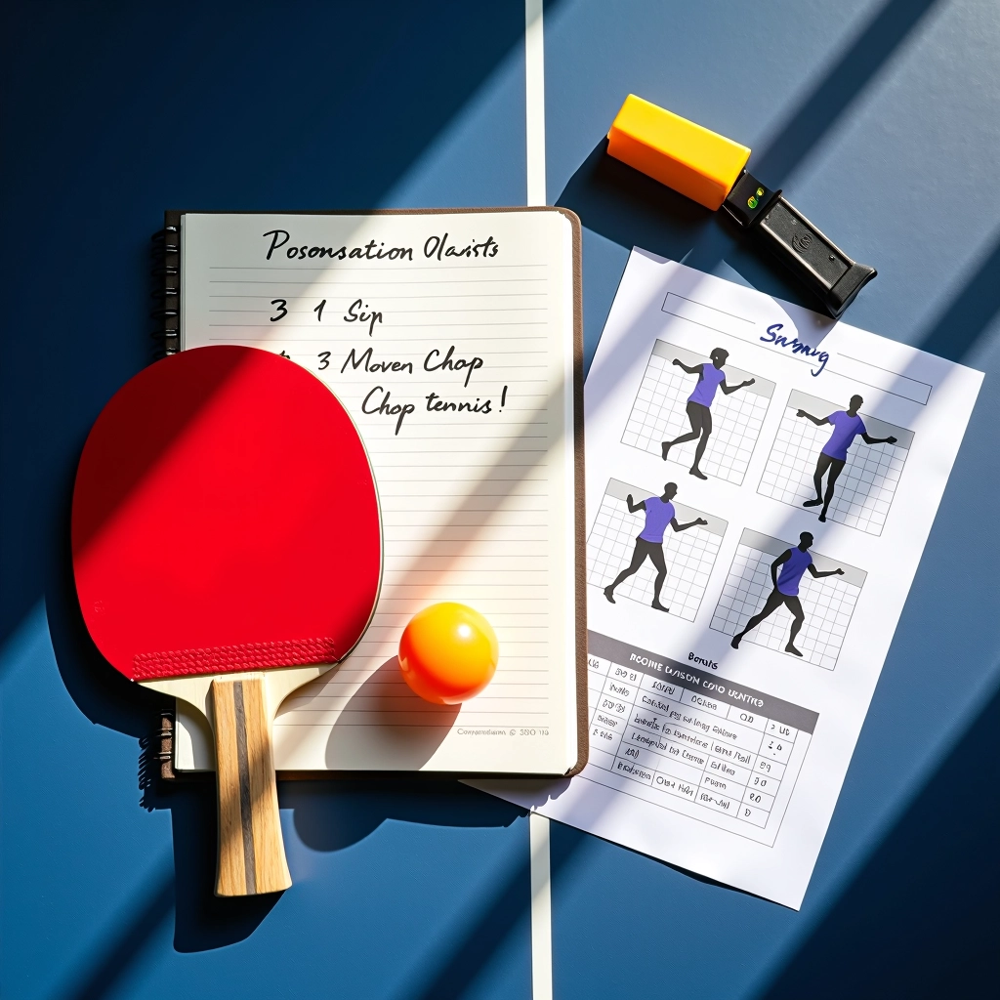

فريق نادي الشمس للمحتوى التحريري
نحن نبحث، نتحقق، ننشر، وننقح محتوى تقنية القطع الدفاعي في تنس الطاولة بعناية واستمرارية

رسالة الفريق التحريري
نحن فريق تحريري مكرس لتجميع وفحص المعلومات حول تقنيات تنس الطاولة الدفاعية. ما يميزنا ليس درجات أكاديمية أو شهادات، بل العملية التي نتبعها في كل مرة ننشر فيها شيئاً. نقوم بدراسة تفاصيل التقنيات والحركات من خلال البحث المنهجي والمراجعة الدقيقة. لا نستعجل، ولا ننشر أي شيء دون أن نتأكد من صحته أولاً.
نتعاون مع مدربي نادي الشمس والممارسين ذوي الخبرة لمراجعة كل تفصيلة — من موضع القدمين إلى حركة المعصم إلى توقيت ضربة القطع. نكتب بلغة واضحة وصريحة دون مبالغة أو ادعاءات فارغة، مركزين على ما يعمل فعلاً على أرض الملعب. هدفنا بسيط: تقديم إرشادات موثوقة تساعد لاعبي تنس الطاولة على تحسين دفاعهم بالفعل.
عملية التحرير والمحتوى
خطوات منهجية نتبعها في كل محتوى ننشره
البحث المعمق
ندرس تفاصيل التقنية من عدة مصادر. نلاحظ حركات لاعبي المستوى العالي، نقرأ الأبحاث المتاحة، ونستمع إلى خبرة المدربين. لا نكتفي بالمعلومات السطحية.
التحقق والمراجعة
نعرض المحتوى على مدربي النادي والممارسين ذوي الخبرة. نطلب منهم أن يخبرونا بما ينقصنا أو ما نحتاج إلى تصحيحه. نحن ننصت بجدية لكل ملاحظة.
التحديث المستمر
المحتوى لا ينتهي عند النشر. نراجع موضوعاتنا بانتظام، نتحقق من أن المعلومات لا تزال دقيقة، وندخل تحسينات عندما نكتشف طرقاً أفضل لشرح المفاهيم.
ما نغطيه
أساسيات التقنية
نبدأ من الصفر. الموضع الصحيح، قبضة المضرب، حركة الذراع، نقطة الاتصال. كل عنصر من عناصر ضربة القطع الدفاعي يُشرح بالتفصيل. نركز على ما يشعر به لاعب المستوى الابتدائي، لا على المصطلحات المعقدة.
التحكم والدوران
الدفاع يتطلب أكثر من الحركة الصحيحة — يتطلب تحكماً. نشرح كيفية التحكم بزاوية المضرب، كيفية قراءة دوران الكرة القادمة، وكيفية رد الدوران بفعالية. هذه المهارات تحتاج إلى فهم وتدريب متكرر.
التمارين العملية
النظرية وحدها لا تكفي. نقدم تمارين حقيقية يمكنك تطبيقها على الملعب اليوم. تمارين تطورت من خلال التجربة الفعلية مع لاعبي نادي الشمس على مدى سنوات.
الاستراتيجيات المتقدمة
عندما تتقن الأساسيات، الخطوة التالية هي الفهم الاستراتيجي. متى تستخدم القطع؟ كيف تتوقع ما سيفعله خصمك؟ كيف تدمج القطع في أسلوب لعب متكامل؟ هذا ما نركز عليه للاعبين الجادين.
لماذا يمكنك الثقة بما نكتبه
نحن نبحث بجدية
لا نعتمد على تخمين واحد أو رأي واحد. نجمع المعلومات من عدة مصادر، ندرس الحركات الفعلية، ونفحص التفاصيل الدقيقة.
نتحقق مع الخبراء
نعرض محتوانا على مدربي الخبرة والممارسين الجادين. لو كنا مخطئين، هم سيخبرونا. نحن نصحح الأخطاء دون تردد.
نحدث المحتوى
المحتوى يتحسر. نراجع موضوعاتنا بشكل منتظم. عندما تظهر معلومات جديدة أو نكتشف طريقة أفضل لشرح شيء ما، نحدثه.
نركز على الفائدة
لا نكتب لإثارة الإعجاب بالكلمات الكبيرة. نكتب لأننا نريدك أن تفهم وتتحسن. هذا هو كل ما يهمنا.
نحن جزء من نادي الشمس للتدريب المتقدم
هذا الموقع يدعم برامج التدريب الفعلية في النادي
فريق المحتوى التحريري هنا يعمل بالتعاون الوثيق مع مدربي نادي الشمس للتدريب المتقدم بالقاهرة. نحن لا نكتب في فراغ — نكتب بناءً على ما نشهده يومياً على أرض الملعب. عندما نشرح تقنية القطع الدفاعي، نحن نشرح ما يعمل فعلاً مع لاعبي النادي، من الأطفال المبتدئين إلى الشباب الطموحين. هذا الاتصال المباشر بالممارسة الفعلية هو ما يجعل محتوانا مختلفاً.
اقرأ مقالاتنا
استكشف مجموعة مقالاتنا حول تقنية القطع الدفاعي. كل مقال مكتوب بنفس العناية والدقة.